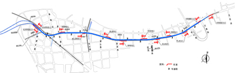
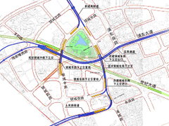
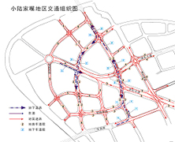

东西通道施工期间交通影响分析及流量预测 ( 2008年04月10日 )
东西通道施工期间交通影响分析及流量预测
研究时间：2007年6月1号—2007年6月30号

图1 东西通道走向及出入匝道布置图
一、研究背景<BR> 东西通道西端接延安路隧道，沿世纪大道、浦东大道，到中环线的金桥路，工程范围全长7850m，地下道路长6079m，规模为4+2车道，全线共布置四对半匝道。<BR>1、2010年后新建路隧道、人民路隧道接线工程完工，施工期间浦东大道保证双向四车道。<BR> 新建路隧道、人民路隧道接线工程方案及小陆家嘴地区交通组织方案如下图所示。</P>


图2 新建路隧道、人民路隧道接线工程及小陆家嘴地区交通组织方案示意图
2、情景二：如2010年之前建成<BR> 2008年至2009年施工期间，新建路隧道、人民路隧道接线工程同步实施，银城东路和银城中路同一时间保留一条道路，施工期间浦东大道保证双向四车道。
二、研究内容<BR> 在2010年后或2010年前实施东西通道，两种情况下，人民路、新建路隧道接线工程和小陆家嘴地区的交通组织方案是不同的，整个地区的背景交通量也是不一样的，因此分别在这两个时期实施东西通道，对小陆家嘴地区、浦东大道沿线地区的交通都将产生一定的影响。<BR>1、2010年后施工
施工期间，车道减少后沿线交通量将有不同程度地下降，全线断面流量将有不同程度的下降，但饱和度变化将呈略增趋势，浦东南路以西至世纪大道一段交通压力较大。<BR> 建议施工期间暂时维续世纪大道（银城东路～浦东大道）段东向西行驶车道，可以缓解浦东大道（浦东南路～世纪大道）东向西路段的交通压力。<BR> 浦东大道道路容量的减少给与之平行的东西向道路带来转移交通量，平行道路等级越高、距离越近所受影越明显，如张扬路饱和度将增长4％～8％。<BR> 作为延安路隧道主要的集散通道之一，浦东大道道路容量的下降导致其他疏解通道的压力增加；同时延安路隧道所承担的越江交通量将有少量的转移，这部分转移的越江交通将对附近的越江设施如复兴路隧道带来3%～5%的增加。<BR> 小陆家嘴地区路网饱和度增加不足1％。<BR>2、2010年前施工
在2010年之前施工，浦东大道沿线及小陆家嘴地区交通受到的影响与2010年后施工时情况类似，及平行道路及世纪大道等延安路隧道的集散道路交通量将有些许上升，同时延安路隧道断面交通量有少量转移，加重复兴路隧道等邻近越江设施的交通压力。<BR> 小陆家嘴地区整体饱和度增加约2.5％。<BR>三、研究结论<BR> 总体上，在2010年前或2010年后实施东西通道，施工期间浦东大道地面双向减少2条车道，都不会对沿线及周边区域带来不可承受的交通压力。<BR>


地址：上海市静安区铜仁路331号11楼 邮编：200040 Web:site:www.scctpi.sh.cn
电话：（021）62477711 62890464 传真：（021）62472386 62892787
 沪ICP备11003425号-4
沪ICP备11003425号-4